Manual da Secretaria
Guia prático de uso do SIGE — Portal da Secretaria para administradores e equipe administrativa.
Modo Inscrições
O modo Inscrições concentra todas as operações relacionadas ao processo seletivo: desde o acompanhamento de métricas até a aprovação de candidatos, gestão de cursos, unidades, editais, turmas e permissões.
1. Dashboard Inscrições
Ao acessar o módulo, o primeiro painel exibe indicadores-chave (KPIs) como total de inscrições, taxa de aprovação e pendências. Gráficos de evolução diária, distribuição por status, inscrições por curso e funil de conversão ajudam a ter uma visão geral do processo. Use os filtros no topo para refinar por período, status ou curso específico.
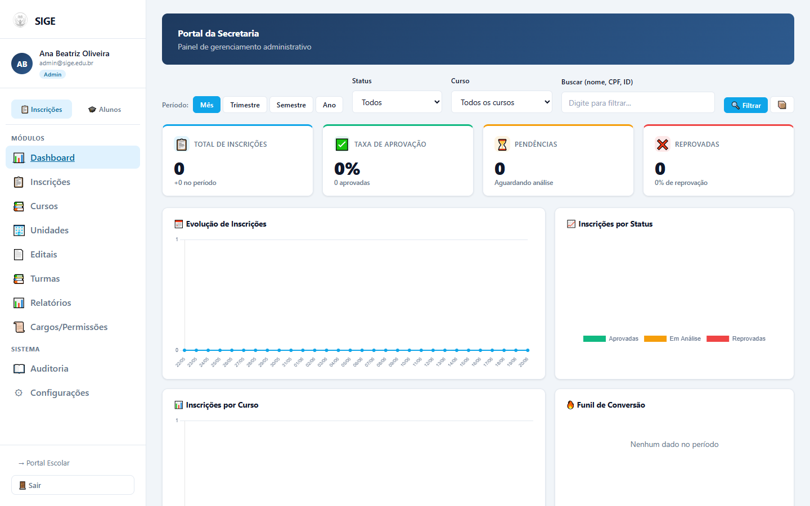
2. Gerenciar Inscrições
Nesta tela você visualiza a lista completa de candidatos inscritos. Clique em um candidato para ver seus detalhes, documentos anexados e histórico. Os botões de ação permitem aprovar ou reprovar a inscrição. Após aprovação, é possível gerenciar a matrícula — vinculando o candidato a uma turma e gerando o registro de aluno.
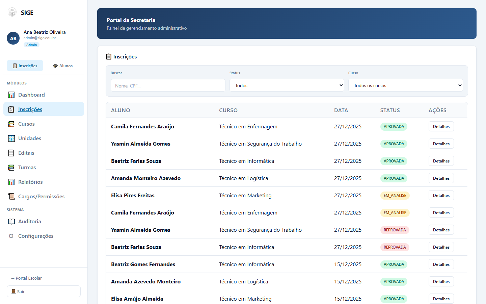
3. Cursos
Gerencie a oferta de cursos da instituição. O formulário no topo da página permite cadastrar um novo curso informando: nome, unidade vinculada, tipo (técnico, graduação, extensão etc.), turno (matutino, vespertino, noturno) e quantidade de vagas. Os cursos cadastrados aparecem na tabela abaixo, com opções de editar (modal) ou excluir (com confirmação).
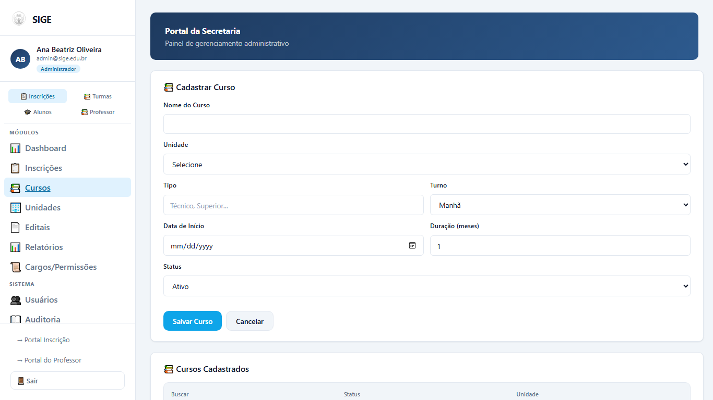
4. Unidades
Cadastre e mantenha as unidades escolares. Cada registro inclui nome da unidade, CNPJ e endereço completo. Utilize o formulário superior para incluir novas unidades; a tabela listará todas as cadastradas com botões para editar ou remover.
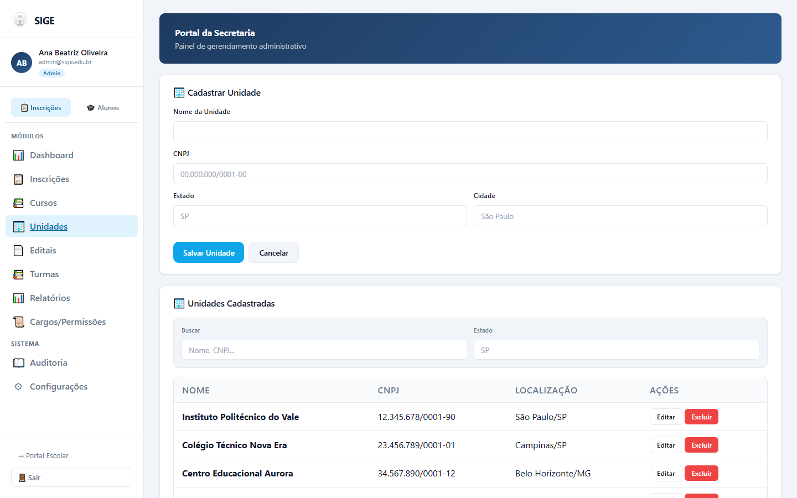
5. Editais
Publique e gerencie os editais do processo seletivo. Para cada edital informe o título, a URL (link para o documento completo) e o status ativo/inativo. Editais ativos ficam visíveis no Portal de Inscrição para os candidatos. Utilize os botões na tabela para editar ou desativar um edital.
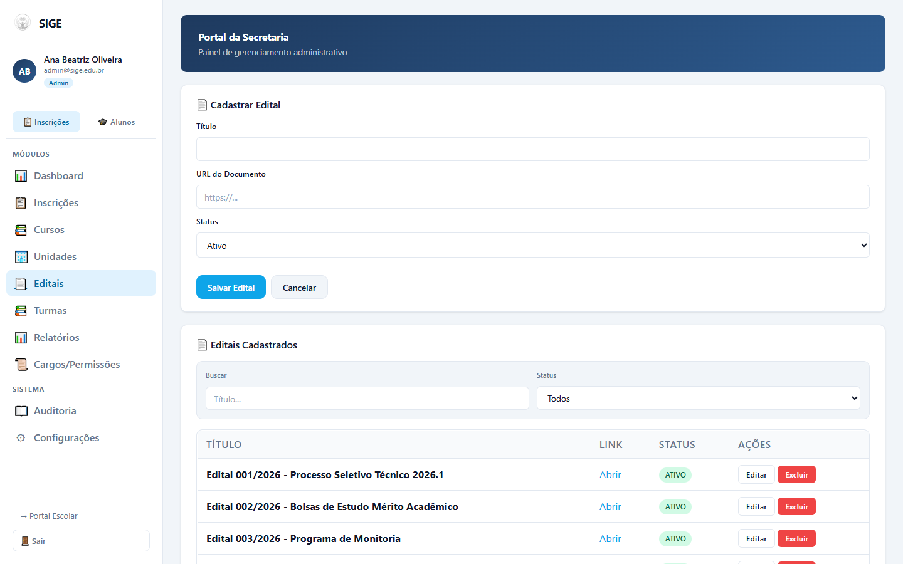
6. Turmas
Organize as turmas para cada curso. No cadastro você define: nome da turma, curso vinculado, turno, número de vagas e ano letivo. Após criar, a turma aparece na lista e pode ser editada ou excluída. As turmas são usadas no momento da matrícula dos candidatos aprovados.
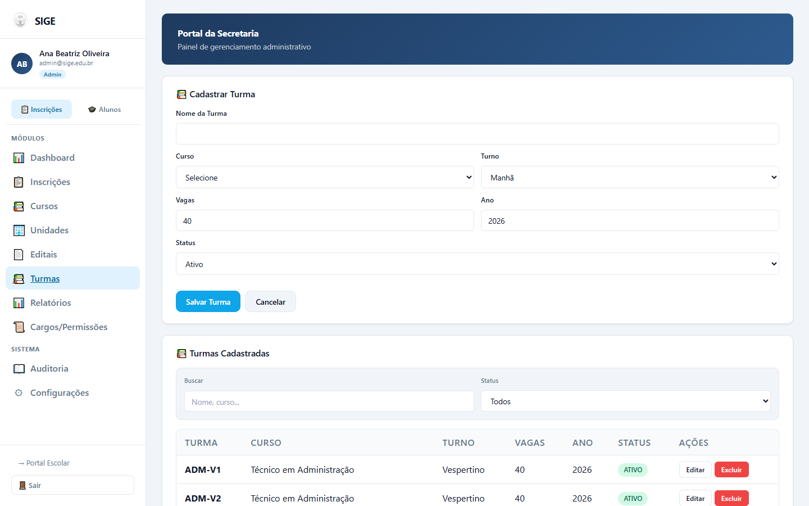
7. Cargos / Permissões
Controle de acesso baseado em papéis (RBAC). Crie cargos personalizados (ex.: "Secretário", "Coordenador", "Professor") e atribua permissões granulares para cada módulo do sistema — quem pode criar, editar, excluir ou apenas visualizar. Isso permite que você defina exatamente o que cada usuário pode fazer dentro do Portal da Secretaria.
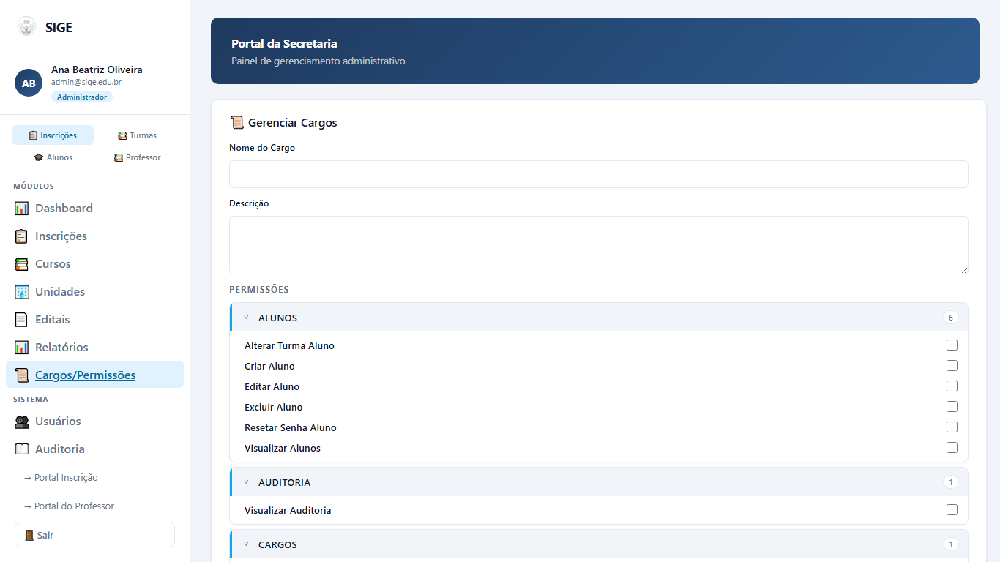
8. Relatórios
Gere relatórios completos do processo seletivo. Aplique filtros por período, curso, unidade ou status para refinar os dados. O relatório pode ser exportado nos formatos CSV ou PDF para arquivamento ou análise externa. Um sumário com totais é exibido antes da exportação.
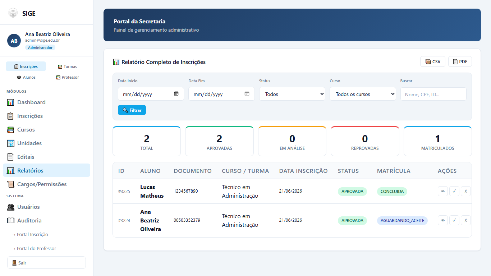
Modo Alunos
O modo Alunos reúne as funcionalidades de gestão acadêmica: acompanhamento de alunos matriculados, cadastro de usuários do sistema, atendimento de reclamações e geração de relatórios.
9. Dashboard Alunos
Painel com indicadores do corpo discente: total de alunos, quantidade de ativos, trancados e concluídos. Gráficos gerenciais auxiliam no acompanhamento da evolução da população estudantil ao longo do tempo.
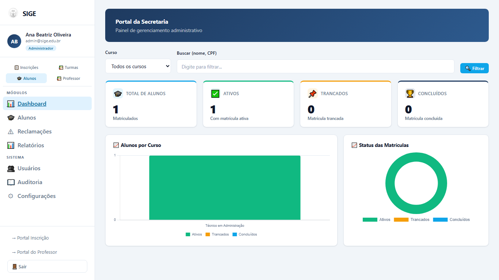
10. Alunos
Consulte a lista completa de alunos matriculados. Ao clicar em um aluno, você acessa uma view detalhada com: dados pessoais, documentos, reclamações registradas, atendimentos realizados e histórico acadêmico. É possível editar informações cadastrais e acompanhar a situação atual de cada estudante.
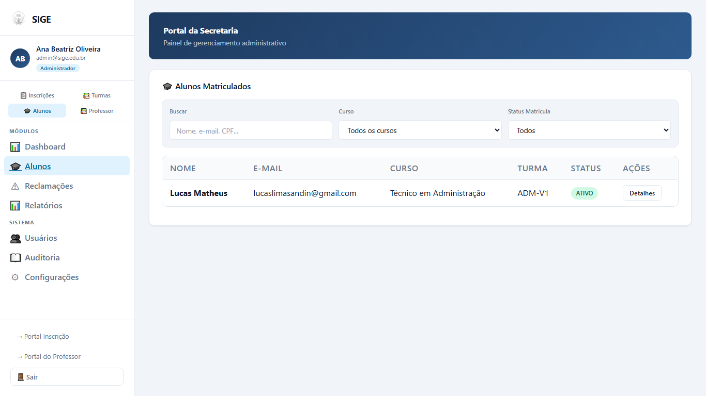
11. Usuários
Gerencie os usuários que acessam o sistema. Cadastre novos usuários informando nome, e-mail e perfil (cargo). A lista de usuários exibe todos os cadastrados com opções de editar dados ou desativar o acesso. Somente usuários com permissão de administrador podem gerenciar esta tela.
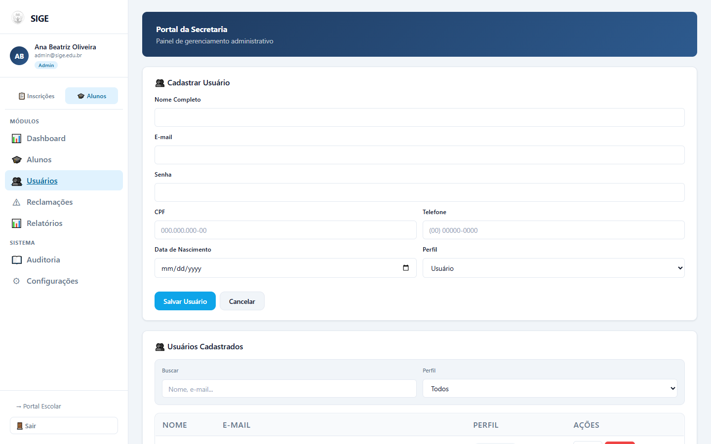
12. Reclamações
Acompanhe e responda às reclamações registradas pelos alunos através do Portal Escolar ou do aplicativo Mobile. A lista exibe todas as reclamações com status (aberta, em andamento, resolvida). Clique em uma reclamação para visualizar o detalhamento e registrar uma resposta. Ao responder, você pode alterar o status para "resolvida" ou mantê-lo em acompanhamento.
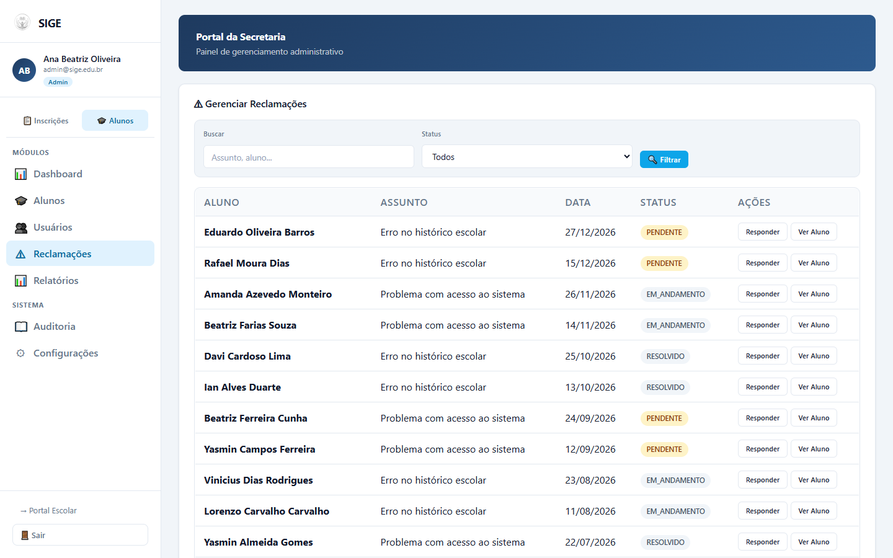
13. Relatórios
Gere relatórios do módulo de alunos com filtros por período, curso, unidade ou situação. Os dados podem ser exportados em CSV ou PDF para encaminhamento à direção ou órgãos reguladores.
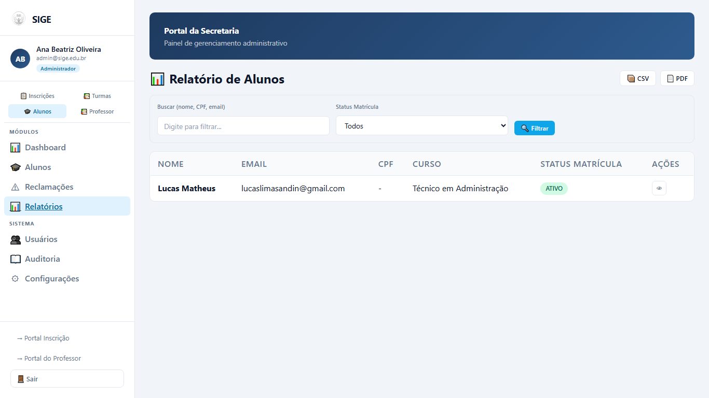
Sistema
Módulos transversais disponíveis independentemente do modo ativo.
14. Auditoria
O sistema mantém um log de todas as ações realizadas pelos usuários (até 500 registros armazenados localmente). Utilize os filtros por tipo de ação ou texto livre para localizar eventos específicos. É possível exportar o log em CSV para auditoria externa. As ações comuns registradas incluem: login, criação/edição/exclusão de registros, aprovação/reprovação de inscrições e alterações de permissões.
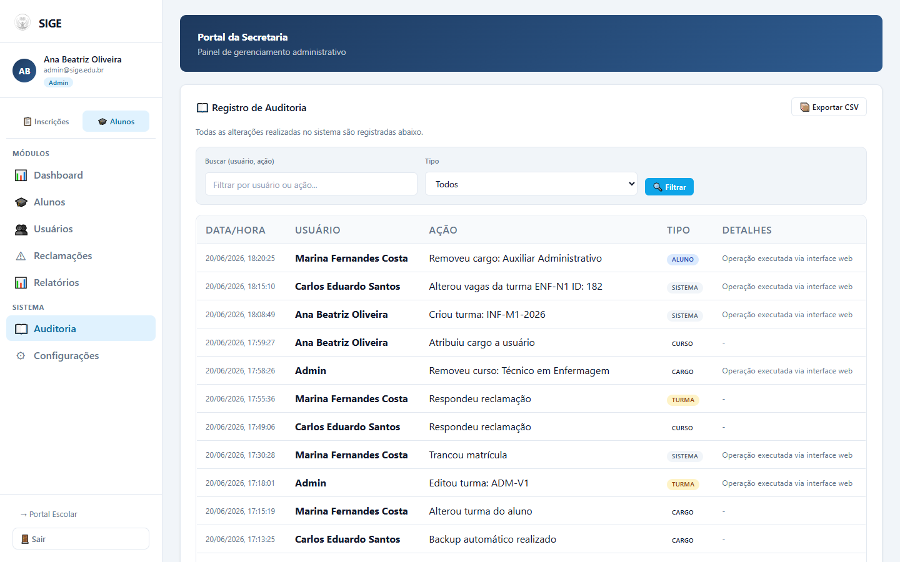
15. Configurações
Personalize a experiência no Portal da Secretaria. Alterne entre o tema claro e escuro (modo noturno) e ajuste o tamanho da fonte entre Pequeno, Médio e Grande. As preferências são salvas automaticamente no navegador e mantidas entre sessões.
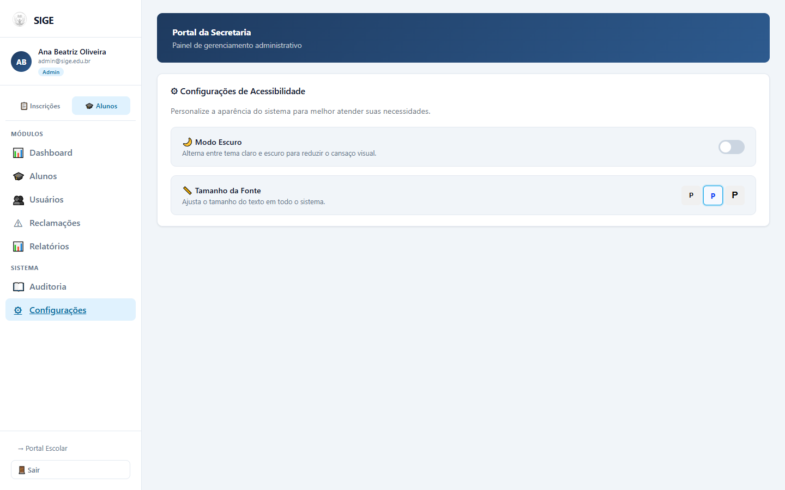